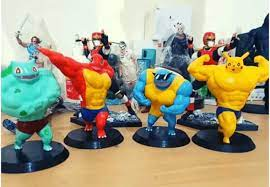
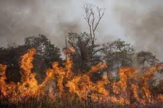

Pokemons invade casa no Rio de Janeiro e usa o banheiro e não dão descagar
Maria Clara do Santo afirma que viu pokemons em sua casa e invadirão e usaram o banheiro e não derão descagar ,ele foi limpar o banheiro e encotra DURATESTOM como isso ela afirma que são perigos
Menino é encontrado após ser abidusido com bicicleta em Pau Grande distrito de majé em RJ
menino afirma que foi abidusido em Pau Grande e sofre de estigimatismo e o pai afirma que et bilu “disse que vem pra buscar conhecimento e continua voltado para terra”.
Biologo Gabriel Calvo afrima que o excesso de queimas na Amazonas vai aumentar a população de charizard
Gabriel afirma que “com aumento das queimadas na amazonia pode aumentar drasticamente a população de charizard por que la existe varias salamandras “.
Reporte e Escritor
Reporte e Escritor

Carl Johnson Reporte